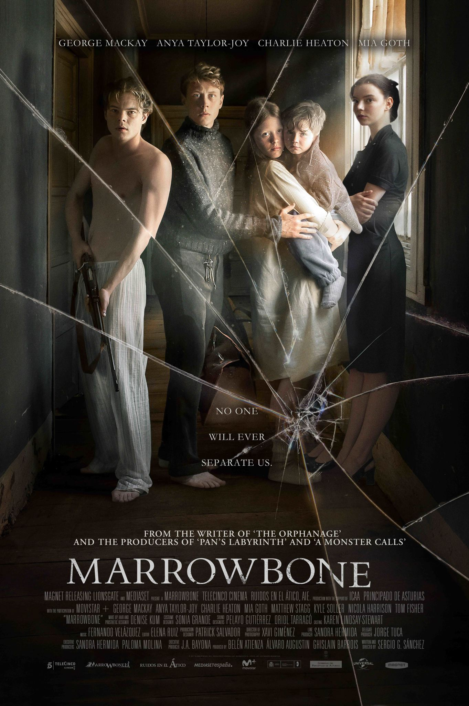

Devastados com a morte da mãe, quatro irmãos, em um estado crescente de depressão e paranoia, decidem se refugiar em um casarão decadente, tentando permanecer unidos. No entanto, o local esconde um obscuro e perigoso segredo que desafiará a união e a sobrevivência dos quatro.
Terror, Ação, Drama, Mistério, Suspense, Aventura, Terror psicológico
27 de outubro de 2017